Part 1: NWN2 Blender Introduction tutorial - Animations
By Kism of Jude Inc.
Hello! We will be going over the basic tutorial to get you started on your development adventure, no need for prior experience with Blender, or NWN2 modding. Take your time, once you get the hang of it, it only takes 15 seconds per animation. (feel free to edit blend file) You will need:
- A way to open Zip files
- Blender 2.91: https://download.blender.org/release/
- A Mixamo Account: https://www.mixamo.com/#/
- Nwn2 animation list
- Nwn2MDK 0.14: https://github.com/Arbos/nwn2mdk/releases/tag/0.14
Shout-out to
and - Animation Tutorial: https://www.dropbox.com/s/qx644w5r2k17phk/Animation%20Tutorial-Blender.rar?dl=0 Original design given to me by Wobbin Thanks for the kick start bro.
Introduction!
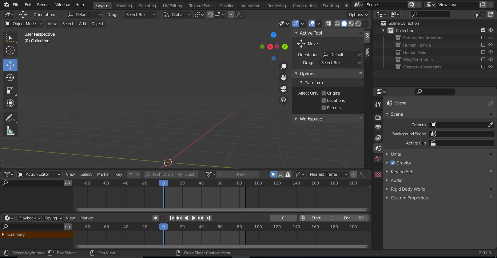
The Blend file comes with a pregenerated set up so with everything you will need. If this is your first time with blender below is a bit of information you can use to start you off. If not, go ahead and skip to Getting started in mixamo!
ViewPort (Sub-section) Object-Mode:
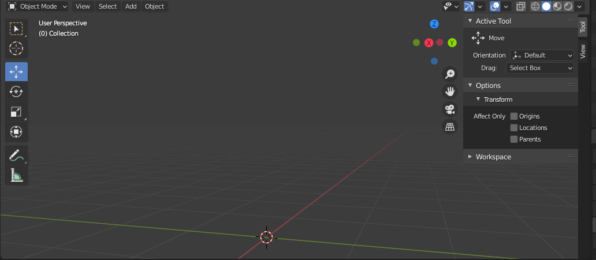
Familiarize yourself with the middle mouse button scrolling, it is very similar to Nwn2 gameplay so it should be relatively easy to get used to, and is the primary area you will be using while using this tutorial.
Property Outliner:
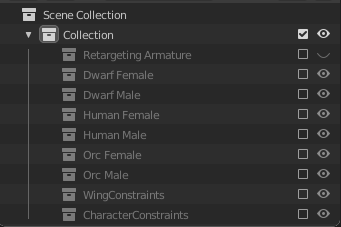
This is the section where all the objects/models/and mechanics for the set up are stored, so if you are looking for something specific you can find them here. To see the contents inside both the Include/Exclude Box, and the Viewport Display eye-icon needs to be checked.. This is to reduce lag on larger projects. Go ahead and check the Human/Male Include/Exclude Box.
ViewPort(Sub-section)Pose-Mode:
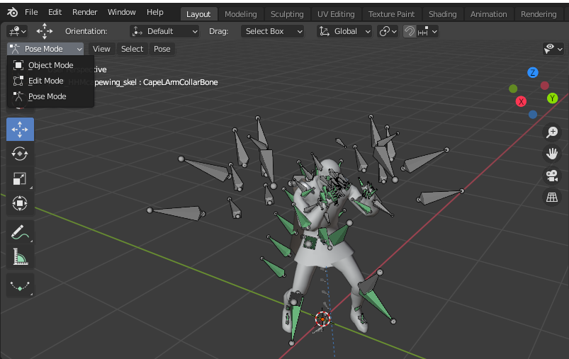
Pose mode is the animation tab, where you will be applying animation to the skeletons.
DopeSheet (Sub-section) Action Editor expand to show ACTION MENU
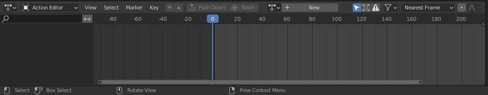
The Dope Sheet will show you if the Selected Object(s) Animation Data and the Keyframes
Time Line:
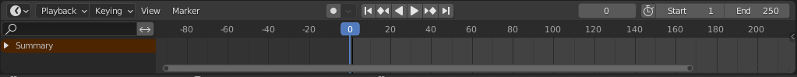
Play options, and the START and END frames options can be adjusted here.
Getting Started With Mixamo!
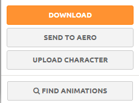
After making a Mixamo account you will want to select the Upload Character Option and import the FBX file that came with the Animation Tutorial. Make sure you select the animation tab at the top left
This tutorial version has its cape limits spinning too quickly or upside down animations could cause the cloak clip through the character.
Scroll, or Search through the animations and hit download
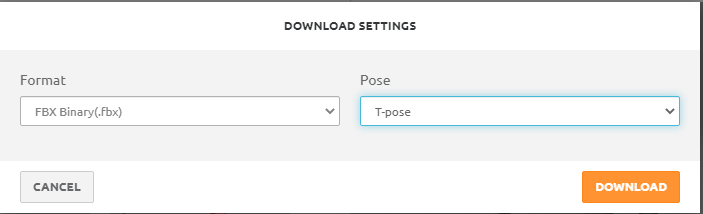
Back to the “Outliner” Tab in blender we are going to check the Include/Exlude Box so the Retargeting armature is visible. No need to click the enable in viewport option as we can already see the Neverwinter character. You only need to be able to select the “Target’’ Armature.

Import the FBX file animation you chose on the Mixamo website:
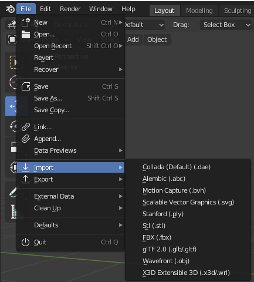
After importing the FBX, you will see two new Objects enter the viewport and are preselected. You can delete these, once the animation is imported into blender it will automatically save in the ACTION MENU, down in the Timeline.
Select the Target Armature in the Outliner Tab
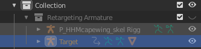
Left click Target Armature
Move to the Timeline Action Menu, and select the animation you imported while having the target armature selected.
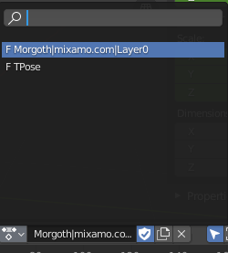
Note the START and END Frames of the animation in the Timeline(adjust end frames to match)
Object Mode Orange highlight means primary/Red means secondary
Left click (p_hhmcapewing_skel) Shift+Left click (p_hhm_skel). Control+Tab which will change your Viewport from “Object” to “Pose” mode
Pose Mode
press A to select all bones.Select the Pose Tab and navigate to “Bake Action”.
Select the Pose Tab and navigate to “Bake Action”.
Bake Action (using pregnerated animation for example)
Press OK after you have checked Visual Keying
Congrats! You are halfway there! Nicely Done! (pardon me, my main computer died, will update this later)
Time to Export!
This set up runs in FBX format, so we will export this file to the NWN2MDK folder.
Export Settings
Be sure your export settings look like the image above. Selected Objects: Checked
Armature: Uncheck: Add Leaf Bones
Bake Animations: Checked Key All Bones: Checked Uncheck: NLA Strips Uncheck: All Actions Uncheck: Force Start/End Keying
Naming! (using the website provided) (I selected the basic unarmed idle for the tutorial)
Export FBX!
<NWN2MDK FOLDER!>
Inside the folder you will find the P_hhm_una_idle.FBX you exported from blender., Drag and Drop the file on top of the Application fbx2nw This will generate a new file named p_hhm_una_idle.GR2(Format Nwn2 uses)
<NWN2MDK FOLDER!>
Move the new file to your neverwinter nights 2 Override Folder in your Documents folder.
Open the Character creation screen in NWN2!